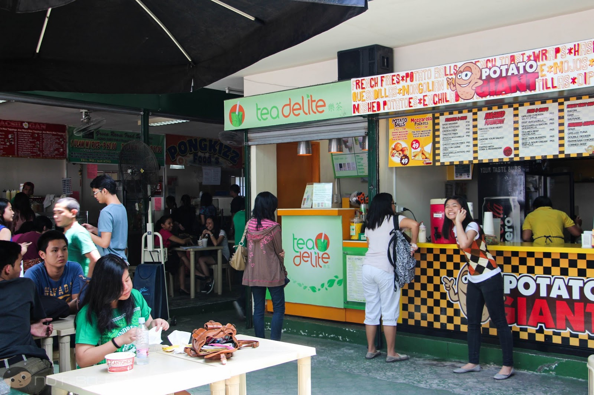
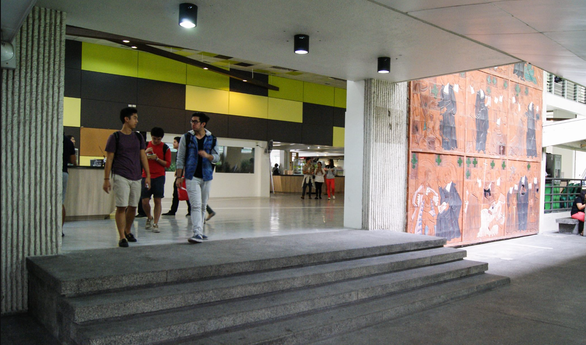

Food Trip in DLSU Manila
Food Trip in DLSU Manila
Unveiling Hidden Treasures: Foodie Adventure in the Campus
Attention, food aficionados and hungry souls! Get ready to embark on a mouthwatering expedition through the culinary wonders surrounding De La Salle University Manila. Join me as we explore the diverse array of delectable delights within and near the campus, from hidden gems in Agno Compound to culinary surprises nestled within Bloemen Hall. Get ready for an unforgettable food adventure that will leave your taste buds craving for more!
1. Agno Compound
Step into Agno Compound, a bustling hub of tantalizing flavors situated right at the heart of DLSU Manila. Here, a multitude of culinary gems awaits, promising a delightful gastronomic experience.
2. Bloemen Hall
Continuing our food adventure, we enter Bloemen Hall, a vibrant hub of culinary creativity and innovation. Prepare to be enchanted by the diverse range of eateries that reside within this hall.
3.Perico's Grill
Nestled within the vibrant campus of De La Salle University,
offers an inviting haven for students
and faculty seeking a taste of comforting homecooked meals.
This cozy eatery is renowned for
its delightful array of full course meals, meticulously crafted to
satisfy even the most discerning
palates. From savory entrees to delectable desserts, Pericos tantalizes visitors with an
assortment of flavors that transport them back to the warmth of homemade goodness. With
each bite, one can savor the essence
of care and dedication put into every dish, making Pericos
a cherished destination for those in search of culinary satisfaction.

De La Salle University Manila isn't just a place of learning; it's a treasure trove of culinary delights
waiting
to be discovered. From the tantalizing offerings in Agno Compound and Bloemen Hall to
the Pericos and international flavors within
the campus, this university is a haven for food
enthusiasts. So, embrace your appetite, embark on this exciting foodie adventure,
and let the
vibrant flavors of DLSU Manila and its surroundings transport you to a world of epicurean delight.
Bon appétit!